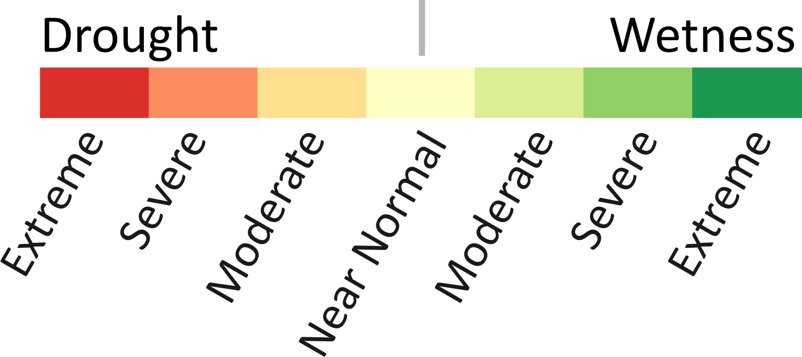

Drought conditions have come and gone over time. The graph to the right gives you a glimpse of this, showing alternating dry (red) and wet (green) conditions since 1895. Click the years to read more about some notable drought events in South Carolina.
South Carolina drought and wet conditions (1895-April 2017), are shown based on the Palmer Drought Severity Index. The rows are years, and the columns are months January through December, reading from left to right. Each square represents a month with a specific measure of dryness (red), wetness (green), or normal (yellow) conditions.
Credit: Carolinas Precipitation Patterns & Probabilities: an Atlas of Hydroclimate Extremes
2015-2016: South Carolina experienced alternating wet and incipient drought conditions. In June 2015, all counties were in incipient or moderate drought. Historic floods in October 2015 alleviated the dry spell for several months. However, in August 2016 drought returned to the State. Hurricane Matthew brought excessive rainfall to most counties, but a lack of adequate moisture persisted in the Upstate region.
2010-2013: Lake Hartwell and Lake Thurmond were 6.5 feet and Lake Jocassee was 21 feet below their target guide curves in March 2012. The inflows into Lake Thurmond for the following three-month were the lowest recorded since 1954. The deteriorating hydrologic conditions reduced the amount of water stored in shallow and deep aquifers.
2007-2009: Drought affected water levels in many lakes. The Savannah Lakes were more than 19 feet below the target level. Lake Marion dropped 9 feet during 2007 reaching the lowest elevation (66.27 ft-msl) since the 1950s. The hydrological drought impacted water supplies, irrigation capacity, and many lake-related businesses as well as golf courses. Voluntary and mandatory water restrictions were issued across the State due to prolonged drought conditions and associated water supply shortages.
1998-2002: This drought lasted four years and the precipitation deficits were among the largest in the State history. The two highest levels of drought severity, extreme and severe drought, lasted throughout summer of 2002; in August, State officials declared the entire State to be in the extreme drought. The drought significantly contributed to the southern pine beetle epidemic. The SC Forestry Commission estimated the total impact of the drought at more than $1.3 billion dollars.
1993: The Greenville-Spartanburg Airport recorded the hottest and driest month on record up to date in July of 1993. Similar records were set at other locations around the State. The drought, which started at the height of the crop growing season in May and June, devastated South Carolina pastures and hay production. The drought and record heat cost the State a total of $22.5 million in crop losses. The total loss for livestock, hay, and pasture was estimated at $34.7 million.
1985-1986: Due to drought conditions and accompanying reduced stream flows hydroelectric power generation was curtailed by 183,978-megawatt hours at the Lake Murray Saluda Hydropower plant. The U.S. Army Corps of Engineers was forced to purchase $10 million in substitute electricity on the open market to compensate for the reduced hydroelectric power production at the Savannah River Plant.
1954: The year set the current record for the State’s driest year with total statewide precipitation of 32.96 inches. An excessively hot summer exacerbated the impacts of limited rainfall. According to National Weather Service reports, crop yield was only 10 percent of its 10-year average production rate. Hurricane Hazel ended extreme drought conditions in eastern South Carolina, although drought continued in western areas of the State.
1925: The growing season had a recorded 12.41-inch rain deficit, and the State experienced an overall rainfall deficit of 18.23 inches. Water for livestock was scarce; many streams had record lows, and deep wells went dry affecting water supply and power production.